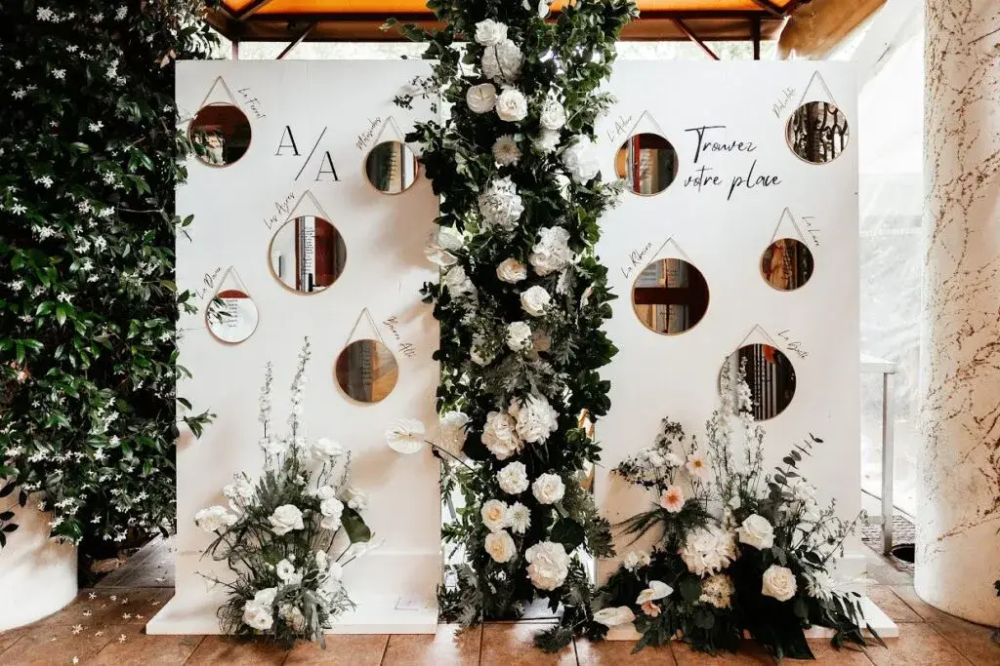
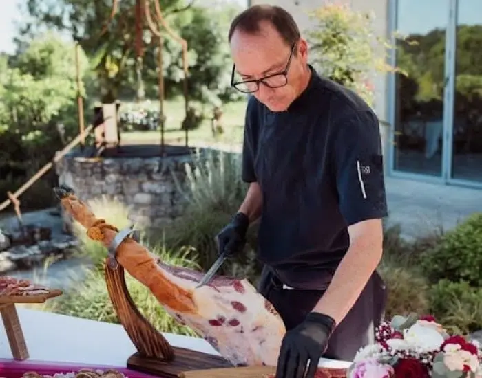
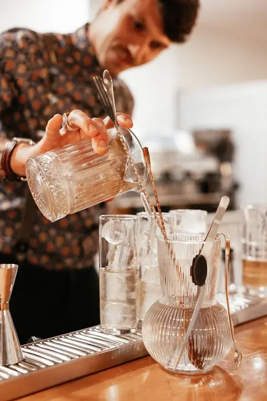
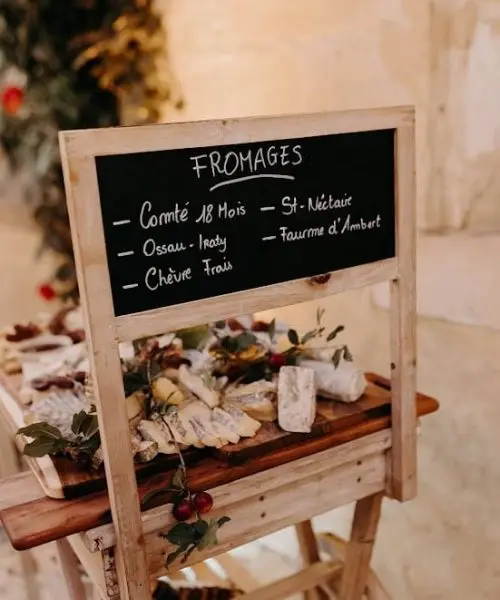
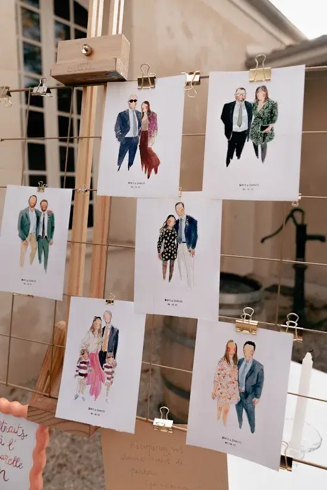
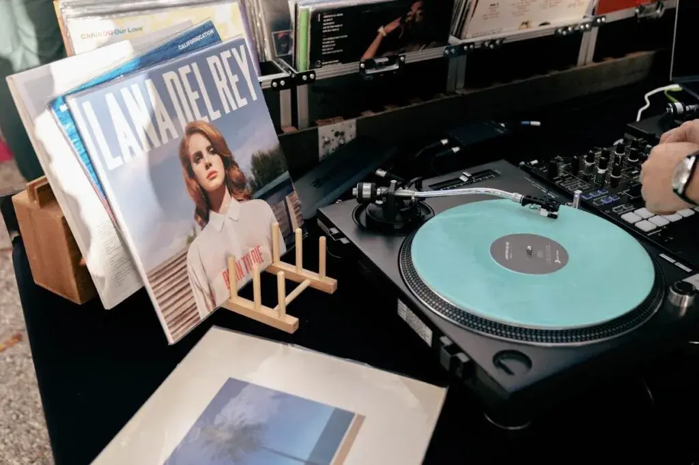

Les mariages immersifs d’aujourd’hui ne se limitent plus à une cérémonie classique et un repas traditionnel. En Gironde et partout en France, accompagnés par une wedding planner à Bordeaux, les couples recherchent désormais des expériences immersives et mémorables, où chaque instant captive tous les sens. Un mariage immersif et expérientiel transforme la journée en véritable voyage sensoriel, mêlant gastronomie, art, musique et technologie pour créer des souvenirs inoubliables.
Imaginez vos invités arrivant et découvrant un lieu qui ne ressemble à aucun autre : décors thématiques, musique interactive, performances artistiques en direct et même des animations technologiques, comme des cabines photo avec effets 360° et hologrammes. Le mariage devient un événement vivant et captivant, où chaque participant se sent impliqué et ébloui.
Dans cet article, nous explorons comment créer un mariage immersif et expérientiel, avec l’expertise d’un wedding planner à Bordeaux, en détaillant les éléments clés : dégustation immersive, cabines photo innovantes, DJ et groupes interactifs, performances artistiques, et en donnant des conseils pratiques pour que chaque instant soit parfait.
Dégustation immersive : un repas en plusieurs actes


Le repas de mariage est souvent un moment fort, mais pour qu’il devienne immersif, il doit raconter une histoire et captiver les sens. La dégustation immersive transforme chaque plat en un acte théâtral et gastronomique :
Qu’est-ce qu’un repas en plusieurs actes ?
Chaque plat est présenté comme un chapitre d’un scénario culinaire.
Le service peut inclure des mise en scène visuelles, comme des fumées aromatiques, des jeux de lumière ou des décorations interactives sur la table.
Les chefs peuvent interagir avec les invités, expliquer la provenance des ingrédients ou créer une surprise gustative à chaque étape.
Exemple concret
Lors d’un mariage immersif, le cocktail pourrait débuter avec des amuse-bouches servies dans des mini-labos culinaires, suivis d’un plat principal présenté sous cloche fumante. Le dessert pourrait être une œuvre comestible interactive : chocolat qui fond sur un élément chauffant, ou glace servie sous une fumée légère pour un effet spectaculaire.
Astuces pour réussir la dégustation immersive
Coordonner la lumière et la musique avec chaque plat pour amplifier l’expérience.
Utiliser des éléments sensoriels : textures, couleurs et arômes différents pour chaque plat.
Impliquer les invités : des ateliers de mini-dégustation ou des démonstrations culinaires interactives.
Cette approche transforme le repas de mariage en véritable expérience gastronomique, où chaque bouchée devient un souvenir mémorable.
Cabines photo innovantes : capturer des souvenirs autrement
La photo est un élément essentiel de tout mariage, mais dans un mariage immersif, elle devient interactive et ludique grâce à des cabines photo innovantes.
Les technologies disponibles
Effets 360° : permettent aux invités de créer des images dynamiques en tournant autour d’un décor interactif.
Hologrammes : ajoutent des éléments virtuels pour des photos surprenantes et modernes.
Filtres personnalisés en temps réel : chaque photo peut être unique et partagée immédiatement sur les réseaux ou imprimée pour repartir avec un souvenir tangible.
Exemple concret
Imaginez une cabine photo sur le thème du mariage : les invités peuvent apparaître dans un décor virtuel reflétant le lieu de cérémonie ou interagir avec des hologrammes représentant des éléments symboliques du couple. Les filtres personnalisés peuvent inclure le logo du mariage, des motifs floraux ou des animations amusantes.
Astuces pour maximiser l’effet
Choisir un emplacement stratégique pour la cabine afin que tous les invités puissent en profiter.
Offrir des accessoires thématiques pour des photos originales.
Intégrer un écran ou un mur digital pour diffuser les photos en temps réel et créer une interaction continue.
Ces innovations transforment la photo traditionnelle en moment de divertissement immersif qui reste gravé dans les mémoires.



Performances artistiques : feu de jour et dessin aquarelle
Pour ajouter une dimension artistique et spectaculaire, certaines animations, sélectionnées par notre wedding planner à Bordeaux, sont incontournables :
Feu de jour
Une performance pyrotechnique en plein jour pour un effet visuel spectaculaire.
Peut être intégrée lors du cocktail ou après le dîner pour émerveiller les invités.
Sécurisée et chorégraphiée, elle devient un moment fort et mémorable du mariage.
Dessin aquarelle en direct
Un artiste peint en temps réel, capturant l’ambiance et les émotions de la journée.
Les œuvres peuvent devenir des souvenirs exclusifs pour le couple ou être exposées lors de la soirée.
Crée une interaction artistique unique et transforme la décoration en spectacle vivant.
Astuces
Choisir des performances adaptées à l’espace disponible.
Coordonner avec le photographe et vidéaste pour immortaliser ces moments.
Intégrer ces éléments dans le fil conducteur de l’expérience immersive, pour qu’ils fassent partie d’une narration globale.

DJ et groupes live immersifs : musique sur mesure
La musique est le cœur de toute fête, et dans un mariage immersif, elle devient interactive et personnalisable :
Playlists personnalisables : les couples et invités peuvent influencer la musique en temps réel, créant une atmosphère unique.
Groupes live interactifs : chanteurs, percussionnistes et musiciens acoustiques interagissent avec le public pour créer des moments spectaculaires.
Animations musicales : karaoké, chorégraphies collectives, battles de danse ou jeux interactifs pour engager tous les invités.
Exemple concret
Un couple a commencé sa soirée avec un DJ, recommandé par notre wedding planner à Bordeaux, proposant des morceaux doux pour la première danse, puis ouvrant la playlist aux invités via une application en temps réel. L’association du DJ et du groupe live a ensuite donné naissance à une ambiance dynamique et personnalisée, qui a conquis l’ensemble des invités.
Conseils pour créer un mariage immersif et expérientiel
Planifier l’expérience dès le début : chaque élément doit servir l’histoire et la thématique du mariage.
Mélanger les sens : gastronomie, visuel, sonore et artistique doivent interagir pour une immersion totale.
Personnaliser chaque détail : couleurs, accessoires, musique et animations doivent refléter la personnalité du couple.
Coordonner les prestataires : traiteurs, DJ, artistes et techniciens doivent travailler en harmonie pour que chaque instant se déroule parfaitement.
Prévoir des moments de surprise : des animations inattendues, comme un feu de jour ou un dessin aquarelle en direct, émerveilleront les invités.
En bref,
Un mariage immersif et expérientiel dépasse la simple célébration : il transforme chaque instant en souvenir durable et chaque invité devient acteur de l’expérience. Grâce à la dégustation immersive, aux cabines photo innovantes, à la musique interactive et aux performances artistiques, chaque détail contribue à créer une journée inoubliable et unique.
Avec une planification soignée et des prestataires adaptés, votre mariage devient une expérience complète, captivant tous les sens et laissant un souvenir impérissable. Plus qu’un événement, un mariage immersif et expérientiel est une véritable aventure sensorielle et émotionnelle, où chaque instant est pensé pour émerveiller, surprendre et célébrer votre amour de manière originale et mémorable.
Lovely Day Event c'est plusieurs types de prestations
L'organisation de mariage
Je vais intervenir sur toutes les étapes de vos préparatifs et vous guider dans vos choix. Je suis force de proposition pour que votre mariage ne ressemble qu’à vous.
Décoration de mariage
Créative et passionnée, je suis certifiée Wedding Designer et je conçois une ambiance scénographique qui correspond au thème de votre mariage.
Coordination le jour J
Je serai le chef d’orchestre pour gérer les différents prestataires, la mise en place de votre décoration et le déroulement de cette belle journée.